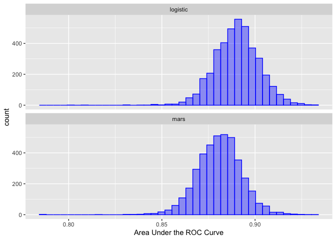

This package can be used to conduct post hoc analyses of resampling results generated by models.
For example, if two models are evaluated with the root mean squared error (RMSE) using 10-fold cross-validation, there are 10 paired statistics. These can be used to make comparisons between models without involving a test set.
There is a rich literature on the analysis of model resampling results such as McLachlan’s Discriminant Analysis and Statistical Pattern Recognition and the references therein. This package follows the spirit of Benavoli et al (2017).
tidyposterior uses Bayesian generalized linear models for this purpose and can be considered an upgraded version of the caret::resamples() function. The package works with rsample objects natively but any results in a data frame can be used.
See Chapter 11 of Tidy Models with R for examples and more details.
Installation
You can install the released version of tidyposterior from CRAN with:
install.packages("tidyposterior")And the development version from GitHub with:
# install.packages("pak")
pak::pak("tidymodels/tidyposterior")Example
To illustrate, here are some example objects using 10-fold cross-validation for a simple two-class problem:
library(tidymodels)
#> ── Attaching packages ────────────────────────────────────── tidymodels 1.1.0 ──
#> ✔ broom 1.0.5 ✔ recipes 1.0.8
#> ✔ dials 1.2.0 ✔ rsample 1.2.0
#> ✔ dplyr 1.1.2 ✔ tibble 3.2.1
#> ✔ ggplot2 3.4.3 ✔ tidyr 1.3.0
#> ✔ infer 1.0.4 ✔ tune 1.1.2
#> ✔ modeldata 1.2.0 ✔ workflows 1.1.3
#> ✔ parsnip 1.1.1.9000 ✔ workflowsets 1.0.1
#> ✔ purrr 1.0.2 ✔ yardstick 1.2.0
#> ── Conflicts ───────────────────────────────────────── tidymodels_conflicts() ──
#> ✖ purrr::discard() masks scales::discard()
#> ✖ dplyr::filter() masks stats::filter()
#> ✖ dplyr::lag() masks stats::lag()
#> ✖ recipes::step() masks stats::step()
#> • Search for functions across packages at https://www.tidymodels.org/find/
library(tidyposterior)
data(two_class_dat, package = "modeldata")
set.seed(100)
folds <- vfold_cv(two_class_dat)We can define two different models (for simplicity, with no tuning parameters).
logistic_reg_glm_spec <-
logistic_reg() %>%
set_engine('glm')
mars_earth_spec <-
mars(prod_degree = 1) %>%
set_engine('earth') %>%
set_mode('classification')For tidymodels, the [tune::fit_resamples()] function can be used to estimate performance for each model/resample:
rs_ctrl <- control_resamples(save_workflow = TRUE)
logistic_reg_glm_res <-
logistic_reg_glm_spec %>%
fit_resamples(Class ~ ., resamples = folds, control = rs_ctrl)
mars_earth_res <-
mars_earth_spec %>%
fit_resamples(Class ~ ., resamples = folds, control = rs_ctrl)From these, there are several ways to pass the results to the perf_mod() function. The most general approach is to have a data frame with the resampling labels (i.e., one or more id columns) as well as columns for each model that you would like to compare.
For the model results above, [tune::collect_metrics()] can be used along with some basic data manipulation steps:
logistic_roc <-
collect_metrics(logistic_reg_glm_res, summarize = FALSE) %>%
dplyr::filter(.metric == "roc_auc") %>%
dplyr::select(id, logistic = .estimate)
mars_roc <-
collect_metrics(mars_earth_res, summarize = FALSE) %>%
dplyr::filter(.metric == "roc_auc") %>%
dplyr::select(id, mars = .estimate)
resamples_df <- full_join(logistic_roc, mars_roc, by = "id")
resamples_df
#> # A tibble: 10 × 3
#> id logistic mars
#> <chr> <dbl> <dbl>
#> 1 Fold01 0.856 0.845
#> 2 Fold02 0.933 0.951
#> 3 Fold03 0.934 0.937
#> 4 Fold04 0.864 0.858
#> 5 Fold05 0.847 0.854
#> 6 Fold06 0.911 0.840
#> 7 Fold07 0.867 0.858
#> 8 Fold08 0.886 0.876
#> 9 Fold09 0.898 0.898
#> 10 Fold10 0.906 0.894We can then give this directly to perf_mod():
set.seed(101)
roc_model_via_df <- perf_mod(resamples_df, iter = 2000)
#>
#> SAMPLING FOR MODEL 'continuous' NOW (CHAIN 1).
#> Chain 1:
#> Chain 1: Gradient evaluation took 0.000216 seconds
#> Chain 1: 1000 transitions using 10 leapfrog steps per transition would take 2.16 seconds.
#> Chain 1: Adjust your expectations accordingly!
#> Chain 1:
#> Chain 1:
#> Chain 1: Iteration: 1 / 2000 [ 0%] (Warmup)
#> Chain 1: Iteration: 200 / 2000 [ 10%] (Warmup)
#> Chain 1: Iteration: 400 / 2000 [ 20%] (Warmup)
#> Chain 1: Iteration: 600 / 2000 [ 30%] (Warmup)
#> Chain 1: Iteration: 800 / 2000 [ 40%] (Warmup)
#> Chain 1: Iteration: 1000 / 2000 [ 50%] (Warmup)
#> Chain 1: Iteration: 1001 / 2000 [ 50%] (Sampling)
#> Chain 1: Iteration: 1200 / 2000 [ 60%] (Sampling)
#> Chain 1: Iteration: 1400 / 2000 [ 70%] (Sampling)
#> Chain 1: Iteration: 1600 / 2000 [ 80%] (Sampling)
#> Chain 1: Iteration: 1800 / 2000 [ 90%] (Sampling)
#> Chain 1: Iteration: 2000 / 2000 [100%] (Sampling)
#> Chain 1:
#> Chain 1: Elapsed Time: 0.334 seconds (Warm-up)
#> Chain 1: 0.099 seconds (Sampling)
#> Chain 1: 0.433 seconds (Total)
#> Chain 1:
#>
#> SAMPLING FOR MODEL 'continuous' NOW (CHAIN 2).
#> Chain 2:
#> Chain 2: Gradient evaluation took 5e-06 seconds
#> Chain 2: 1000 transitions using 10 leapfrog steps per transition would take 0.05 seconds.
#> Chain 2: Adjust your expectations accordingly!
#> Chain 2:
#> Chain 2:
#> Chain 2: Iteration: 1 / 2000 [ 0%] (Warmup)
#> Chain 2: Iteration: 200 / 2000 [ 10%] (Warmup)
#> Chain 2: Iteration: 400 / 2000 [ 20%] (Warmup)
#> Chain 2: Iteration: 600 / 2000 [ 30%] (Warmup)
#> Chain 2: Iteration: 800 / 2000 [ 40%] (Warmup)
#> Chain 2: Iteration: 1000 / 2000 [ 50%] (Warmup)
#> Chain 2: Iteration: 1001 / 2000 [ 50%] (Sampling)
#> Chain 2: Iteration: 1200 / 2000 [ 60%] (Sampling)
#> Chain 2: Iteration: 1400 / 2000 [ 70%] (Sampling)
#> Chain 2: Iteration: 1600 / 2000 [ 80%] (Sampling)
#> Chain 2: Iteration: 1800 / 2000 [ 90%] (Sampling)
#> Chain 2: Iteration: 2000 / 2000 [100%] (Sampling)
#> Chain 2:
#> Chain 2: Elapsed Time: 0.333 seconds (Warm-up)
#> Chain 2: 0.138 seconds (Sampling)
#> Chain 2: 0.471 seconds (Total)
#> Chain 2:
#>
#> SAMPLING FOR MODEL 'continuous' NOW (CHAIN 3).
#> Chain 3:
#> Chain 3: Gradient evaluation took 6e-06 seconds
#> Chain 3: 1000 transitions using 10 leapfrog steps per transition would take 0.06 seconds.
#> Chain 3: Adjust your expectations accordingly!
#> Chain 3:
#> Chain 3:
#> Chain 3: Iteration: 1 / 2000 [ 0%] (Warmup)
#> Chain 3: Iteration: 200 / 2000 [ 10%] (Warmup)
#> Chain 3: Iteration: 400 / 2000 [ 20%] (Warmup)
#> Chain 3: Iteration: 600 / 2000 [ 30%] (Warmup)
#> Chain 3: Iteration: 800 / 2000 [ 40%] (Warmup)
#> Chain 3: Iteration: 1000 / 2000 [ 50%] (Warmup)
#> Chain 3: Iteration: 1001 / 2000 [ 50%] (Sampling)
#> Chain 3: Iteration: 1200 / 2000 [ 60%] (Sampling)
#> Chain 3: Iteration: 1400 / 2000 [ 70%] (Sampling)
#> Chain 3: Iteration: 1600 / 2000 [ 80%] (Sampling)
#> Chain 3: Iteration: 1800 / 2000 [ 90%] (Sampling)
#> Chain 3: Iteration: 2000 / 2000 [100%] (Sampling)
#> Chain 3:
#> Chain 3: Elapsed Time: 0.323 seconds (Warm-up)
#> Chain 3: 0.098 seconds (Sampling)
#> Chain 3: 0.421 seconds (Total)
#> Chain 3:
#>
#> SAMPLING FOR MODEL 'continuous' NOW (CHAIN 4).
#> Chain 4:
#> Chain 4: Gradient evaluation took 4e-06 seconds
#> Chain 4: 1000 transitions using 10 leapfrog steps per transition would take 0.04 seconds.
#> Chain 4: Adjust your expectations accordingly!
#> Chain 4:
#> Chain 4:
#> Chain 4: Iteration: 1 / 2000 [ 0%] (Warmup)
#> Chain 4: Iteration: 200 / 2000 [ 10%] (Warmup)
#> Chain 4: Iteration: 400 / 2000 [ 20%] (Warmup)
#> Chain 4: Iteration: 600 / 2000 [ 30%] (Warmup)
#> Chain 4: Iteration: 800 / 2000 [ 40%] (Warmup)
#> Chain 4: Iteration: 1000 / 2000 [ 50%] (Warmup)
#> Chain 4: Iteration: 1001 / 2000 [ 50%] (Sampling)
#> Chain 4: Iteration: 1200 / 2000 [ 60%] (Sampling)
#> Chain 4: Iteration: 1400 / 2000 [ 70%] (Sampling)
#> Chain 4: Iteration: 1600 / 2000 [ 80%] (Sampling)
#> Chain 4: Iteration: 1800 / 2000 [ 90%] (Sampling)
#> Chain 4: Iteration: 2000 / 2000 [100%] (Sampling)
#> Chain 4:
#> Chain 4: Elapsed Time: 0.324 seconds (Warm-up)
#> Chain 4: 0.098 seconds (Sampling)
#> Chain 4: 0.422 seconds (Total)
#> Chain 4:From this, the posterior distributions for each model can be obtained from the tidy() method:
roc_model_via_df %>%
tidy() %>%
ggplot(aes(x = posterior)) +
geom_histogram(bins = 40, col = "blue", fill = "blue", alpha = .4) +
facet_wrap(~ model, ncol = 1) +
xlab("Area Under the ROC Curve")
See contrast_models() for how to analyze these distributions
Contributing
This project is released with a Contributor Code of Conduct. By contributing to this project, you agree to abide by its terms.
For questions and discussions about tidymodels packages, modeling, and machine learning, please post on RStudio Community.
If you think you have encountered a bug, please submit an issue.
Either way, learn how to create and share a reprex (a minimal, reproducible example), to clearly communicate about your code.
Check out further details on contributing guidelines for tidymodels packages and how to get help.